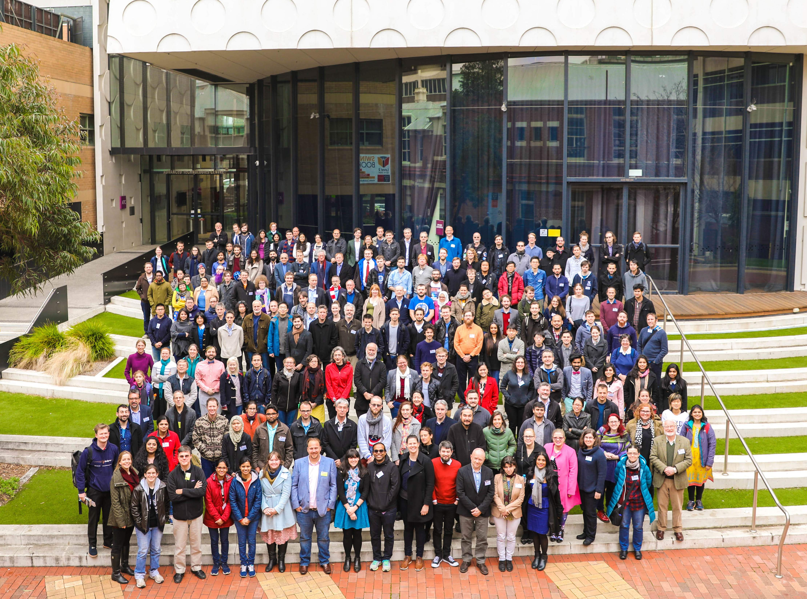

orcid.org/0000-0002-4306-5950
orcid.org/0000-0002-4306-5950  Recognize Benjamin
Recognize Benjamin ML-accelerated scientific discovery in action!
— Miles Cranmer (@MilesCranmer) October 12, 2023
This new paper in ApJ Letters uses PySR to discover a new relation between supermassive black hole mass and properties of its host spiral galaxy:
Extremely cool work!!https://t.co/JhPOY93iCv pic.twitter.com/LgRGUXmFOD
Research
Contents
- Proprietary Images
- Artwork
- Measuring the Logarithmic Spiral-arm Pitch Angle of Spiral Galaxies
- Multicomponent Decomposition of Galaxies
- Black Hole Mass Scaling Relations
- What Causes Spiral Structure in Galaxies?
- Artificial Intelligence and Machine Learning
- Repositories, Metrics, Visualizations, and Academic Profiles
- Peer-reviewed Publications
- Ph.D. Dissertation
- Other Papers
- Acknowledgments
- Endorsements
- Magazine Article
- Software
- Academic Tree
- Erdős Number
- Research Affiliations
- Collaborators
- Professional Memberships
- Curriculum Vitæ/Résumé
- Conference Photos
BACK TO TOP
Proprietary Images

Mars–Jupiter Conjuction – August 14, 2024 – taken with an iPhone SE (2nd Generation), looking through a 6-inch telescope.

Total Solar Eclipse – April 8, 2024 – taken with an iPhone SE (2nd Generation), looking through a 6-inch telescope.

Lunar Eclipse – May 15, 2022 – taken with an iPhone SE (2nd Generation), looking through a 6-inch telescope.

Lunar Eclipse – November 19, 2021 – taken with an iPhone SE (2nd Generation), looking through a 6-inch telescope.
Jupiter/Saturn Conjunction – December 21, 2020 – taken with an iPhone SE (2nd Generation), looking through a 6-inch telescope.
Images of face-on spiral galaxies, taken during the nights of November 8-10, 2013, on the 3.5m WIYN telescope.
BACK TO TOP
Artwork

"Ben" (2021), portrait by Amanda Cockerham.

Image by James Josephides. Featured in our 2017 Press Release and on the cover of the 2019 Swinburne Annual Report (with a description in the inside cover). LinkedIn post from Alister Graham. Mention on Alister Graham's website.
BACK TO TOP
Measuring the Logarithmic Spiral-arm Pitch Angle of Spiral Galaxies
Spiral galaxies are distinguished by their prominent bright spiral arms. Logarithmic spirals best describe the geometry of their winding. Logarithmic spirals form a continuum of shapes from spirals that are so tightly wound they become circles, to spirals that are so loosely wound that they form straight lines (see the animated gif below). In the animation, the only parameter changing is the "pitch angle" of the spiral pattern. We denote pitch angle with the Greek letter \(\phi\). In general terms, \(\phi\) is the angle between a line tangent to a logarithmic spiral and a line tangent to a circle of radius \(r\) that are constructed from and intersect both at \((r,\theta)\), the reference point (see Figure 1). In equation form, \(\cot\phi=rd\theta/dr\). Tightly wound spirals have low values (down to \(0^\circ)\) of \(\phi\) and loosely wound spirals have high values (up to \(90^\circ)\) of \(\phi\). I use advanced software packages that I helped develop to measure pitch angles of spiral galaxies to quantitatively classify them according to the geometry of their arm winding. These different software routines employ 2D fast Fourier transform (Davis et al. 2012), computer vision (Davis & Hayes 2014), and template fitting (Shields et al. 2022) algorithms. For further details, see Davis et al. (2017), and references therein. Figure A1 overlays the measured spiral arcs on top of the galaxy UGC 6093, demonstrating a mean pitch angle of \(|\phi|\approx10^\circ\pm2^\circ\).

The above animation shows a two-arm logarithmic spiral pattern that begins with \(|\phi|=5^\circ\) and incrementally increases \(|\phi|\) by \(5^\circ\) in each successive frame until \(|\phi|=85^\circ\), then the animation repeats.

BACK TO TOP
Multicomponent Decomposition of Galaxies
Spiral galaxies are composed of many separate major constituents. These can include: (i) a bright point source resulting from a nuclear star cluster or active galactic nucleus, (ii) a bulge or spheroid, (iii) an elongated bar, (iv) rings, (v) ansae (handle-like structures at the end of a bar), (vi) boxy-peanut shaped structures, (vii) exponential disks, which can also be broken (truncated or anti-truncated), (viii) spiral arms, (ix) halos, etc. It is, therefore, possible to analyze the total light of a galaxy and decompose the light profile of a galaxy into its separate components. In the below figures, I demonstrate this accounting of components by showing radial surface brightness profiles of the galaxy UGC 6093. As shown in Figure 54, the galaxy is best described by modeling it with nine components: (1) a central point source (lime green), (2) excess nuclear light (cyan), (3) a bulge (red), (4) a bar (orange), (5) an exponential disk (blue), (6-9) an four radial crossings of spiral arms (cyan). Figure 55 shows the original image of UGC 6093, the model image, residual image, and an annotated image of the modeled components from Figure 54. The whole process detailed in these two figures requires significant image processing and many sophisticated software routines. For full details, Davis et al. (2019), and references therein.


BACK TO TOP
Black Hole Mass Scaling Relations
Supermassive black holes (SMBHs; \(M_{\rm BH}\geq10^5M_\odot\)) are believed to lie at the centers of nearly all galaxies. It is also abundantly evident that SMBHs and their host galaxies must co-evolve. However, our knowledge of this coevolution is perplexed by an analogous "chicken-and-egg" problem: which came first, the black hole or the galaxy? Did the galaxy form, spawn a black hole which subsequently grew and settled in the nucleus of its galaxy, or did the black hole form first and then seeds the growth of an entire galaxy around it? The answer to this fundamental question is important for our understanding of galaxy evolution. Black holes are by nature invisible, and therefore extremely difficult to study and measure. As of 2019, astronomers have only managed to directly measure the masses of 154 black holes in the center of galaxies. From these measurements, we have shown that black hole mass correlates with numerous properties of galaxies, including bulge mass and its light concentration (Davis et al. 2019); disk and total mass (Davis et al. 2018); the shear parameter of the galactic rotation curve (Seigar et al. 2014); the maximum rotational velocity of the disk and dark matter halo mass (Davis et al. 2019); stellar velocity dispersion of the bulge (Davis et al. 2017); etc. See also Sahu et al. (2019a), Sahu et al. (2019b), Sahu et al. (2020), Sahu et al. (2022a), Sahu et al. (2022b), and Davis & Jin (2023).
However, perhaps the most surprising result is the strong correlation between the geometry of spiral arms (i.e., logarithmic spiral-arm pitch angle) in spiral galaxies and their central black holes' mass (see Berrier et al. 2013; Davis et al. 2017, and references therein). Specifically, spiral galaxies with more tightly wound spiral arms possess more massive black holes and vice versa (see the figure below from Davis & Graham 2021). Thus, measuring the structure of spiral galaxies is a powerful tool for estimating the mass of black holes in galaxies by only measuring pitch angle, which only requires simple imaging and does not require complicated spectrographic studies. By combining all of the aforementioned scaling relations, we can use multiple independent methods to identify galaxies that could potentially harbor elusive intermediate-mass black holes (IMBHs; \(10^2M_\odot\leq M_{\rm BH}<10^5M_\odot\)). IMBHs pose a gaping missing link in the evolutionary demographics of black holes because both smaller solar mass black holes (\(M_{\rm BH}<10^2M_\odot\)) and larger SMBHs have been directly detected. Therefore, identifying candidate galaxies that could warrant follow-up studies and possible confirmation of IMBHs is an essential endeavor in the field of black holes (Koliopanos et al. 2016; Graham et al. 2019; Graham et al. 2021a; Graham et al. 2021b). Finally, by measuring large populations of black holes, we can take a census of black holes in the universe garner information about their demographics (Davis et al. 2014; Mutlu-Pakdil et al. 2016; Fusco et al. 2022).
Spiral galaxy arms with varying degrees of tightness, and the corresponding galaxy type and central black hole mass in units of our Sun’s mass. This template can be used to estimate the black hole masses in spiral galaxies.

Planar black hole mass scaling relation between black hole mass, pitch angle, and maximum rotational velocity (Davis & Jin 2023). You can read more about Symbolic Regression machine learning methods that we use to discover new scaling relations.
BACK TO TOP
What Causes Spiral Structure in Galaxies?
Spiral structure was first observed in Messier 51a, aka "The Whirlpool" galaxy, by Lord Rosse in 1845. We now know that spiral galaxies make up approximately 60% of galaxies in today's universe. However, astronomers are still perplexed about what mechanism generates and maintains spiral structure in galaxies. Of the numerous theories that have been proposed, perhaps spiral density wave theory is the most intuitive and enduring of the theories. Spiral density wave theory posits quasistatic density waves propagate through the disks of galaxies and triggers spiral-shaped regions of enhanced star formation by locally compressing the gas and triggering enhanced star formation. These quasistatic density waves are akin to traffic jams where individual cars may enter and then leave the location of the traffic jam, but the jam itself remains relatively stationary. This is also representative of a standing wave on a vibrating string, where the nodes of vibration remain fixed. If this acoustic analogy is further explored, we find that the frequency of a vibrating string is also analogous to the pitch angle of a spiral galaxy. For a string of fixed length (like on a string instrument), its frequency is determined by two parameters: (i) the tension in the string and (ii) the density per unit length of the string. Similarly, the pitch angle of winding in a galaxy's spiral pattern (which can be thought of as a frequency of winding) is also determined by two parameters: (i) the central mass of the galaxy and (ii) the density of the galactic disk.
On a violin, tightening a tuning peg increases the tension in a string and increases the frequency that is heard. Comparably, increasing the central mass of a galaxy increases its gravitational attraction, and pulls more strongly on the spiral pattern of the galaxy, making it tighter. Also on a violin, the thicker gauge (denser) strings vibrate with a lower frequency than the thinner gauge (less dense) strings. Likewise, decreasing the density of gas in the disk of a galaxy also speeds up the propagation of the density wave and tightens the winding of the spiral pattern, just as inhaling helium and then speaking increases the frequency of your voice. In Davis et al. (2015), we verified from observations that this three-parameter correlation exists between the central mass of a galaxy, the density of gas in its disk, and the pitch angle of its spiral pattern (see Figure 1 below). Furthermore, Pour-Imani et al. (2016) confirmed the prediction of spiral density wave theory that the spiral pattern should appear slightly different when observed in different wavelengths of light. We studied 41 spiral galaxies in various wavelengths of light, ranging from far-ultraviolet to near-infrared (see also Miller et al. 2019). We found that spiral patterns are slightly looser when the filter of light highlights blue, young star-forming regions and is marginally tighter when the filter highlights red, old stellar populations. This is evidence that stars which form the spiral pattern are born in the density wave and then drift out of the density wave, just like cars emerging from a traffic jam (see Figure 2 below). For additional studies, see Abdeen et al. 2020 and Miller et al. 2022.
Figure 1. Three-dimensional plot of the plane depicted by a translucent blue meshed surface, along with the plotted points of the 24 galaxy member included data set (depicted by red spheres with the Milky Way in green). The axes \([x, y, z]\) depict \([\tan|P|\), \(\log(M_{\star}^{bulge}/M_{\odot})\), \(\Sigma_{H_{I}}^{max}]\), respectively.
Figure 2. Predictions of density-wave theory for spiral-arm structure with old stars, blue stars, gas, and dust. On the left is a scenario where star formation occurs after gas clouds pass through the minimum of the potential of the density wave. On the right is a scenario in which star formation occurs as the gas clouds approach this minimum of the potential.
BACK TO TOP
Artificial Intelligence and Machine Learning
We use advanced artificial intelligence methods, specifically a branch of machine learning called Symbolic Regression, to identify higher-order black hole mass scaling relations. This provides us with novel corrrelations. However, correlation does not imply causation. We use causal discovery methods to glean the causal relationships between observational data. Our first major study focuses on the causal connections between supermassive black holes and properties of their host galaxies.
BACK TO TOP
Repositories, Metrics, Visualizations, and Academic Profiles
- List of Publications — APA style (ordered by date)
- SAO/NASA Astrophysics Data System (ADS) — Only Refereed and Accepted Publications
- Search Results Page (All) — Search Results Page (Only Refereed and Accepted Publications)
- Search Results Page (ORCiD)
- Google Scholar
- Zotero
- Impactio — Export Profile
- Scopus
- arXiv.org – Author Library
- Paperscape Map → search on "?author B.L.Davis"
- My Paperscape
- Swinburne Research Analytics
- ResearchGate
- Astrophysics Source Code Library
-
- Exaly
- SciProfiles
- Academia
- ScienceWISE
- Semantic Scholar
- LinkedIn
- Github
- Web of Science
- Dimensions
- INSPIRE
- Search Results Page (All) — Search Results Page (Only Refereed and Accepted Publications)
- Search Results Page (ORCiD)
BACK TO TOP
Peer-reviewed Publications

Word cloud of the abstracts from all of my peer-reviewed publications.
- Davis, B. L.*, Ali-Dib, M.*, Zheng, Y.*, Jin, Z.*, Zhang, K., & Macciò, A. V., "Causal Evidence for the Primordiality of Colors in Trans-Neptunian Objects," submitted to The Astrophysical Journal, April 12, 2025. *These authors contributed equally to this work and are listed alphabetically.
- Khan, F. M., Davis, B. L., Macciò, A. V., & Holley-Bockelmann, K., "Where Have All the Little Red Dots Gone? Supermassive Black Hole Binary Dynamics and its Impact on Galaxy Properties," submitted to The Astrophysical Journal Letters, March 10, 2025.
- Jin, Z., Pasquato, M.*, Davis, B. L.*, Deleu, T., Luo, Y., Cho, C., Perreault-Levasseur, L., Lemos, P., Bengio, Y., Kang, X., Macciò, A. V., & Hezaveh, Y., "Causal Discovery in Astrophysics: Unraveling Supermassive Black Hole and Galaxy Coevolution," The Astrophysical Journal, 971, 212, January 28, 2025. *These authors contributed equally to this work.
Causal Discovery in Astrophysics: Unraveling Supermassive Black Hole and Galaxy Coevolution
- Waterval, S., Macciò, A. V., Buck, T., Obreja, A., Cho, C., Jin, Z., Davis, B. L., Dixon, K. L., & Kang, X. "HELLO project: High-\(z\) Evolution of Large and Luminous Objects," Monthly Notices of the Royal Astronomical Society, 533, 1463, August 8, 2024.
HELLO project: High- z Evolution of Large and Luminous Objects
- Davis, B. L., Graham, A. W., Soria, R., Jin, Z., Karachentsev, I. D., Karachentseva, V. E., & D'Onghia, E., "Identification of Intermediate-mass Black Hole Candidates among a Sample of Sd Galaxies," The Astrophysical Journal, 971, 123, August 12, 2024.
Identification of Intermediate-mass Black Hole Candidates among a Sample of Sd Galaxies
- Davis, B. L. & Jin, Z., "Discovery of a Planar Black Hole Mass Scaling Relation for Spiral Galaxies," The Astrophysical Journal Letters, 956, L22, October 11, 2023.
Discovery of a Planar Black Hole Mass Scaling Relation for Spiral Galaxies
- Amaro-Seoane, P., Andrews, J., Arca Sedda, M. et al., "Astrophysics with the Laser Interferometer Space Antenna," Living Reviews in Relativity 26, 2, March 14, 2023.
Astrophysics with the Laser Interferometer Space Antenna
- Fusco, M. S., Davis, B. L., Kennefick, J., Kennefick, D., & Seigar, M. S., "Probing the low-mass end of the black hole mass function via a study of faint local spiral galaxies," Universe, 8(12), 649, December 6, 2022.
Probing the Low-Mass End of the Black Hole Mass Function via a Study of Faint Local Spiral Galaxies
- Shields, D., Boe, B., Pfountz, C., Davis, B. L., Hartley, M., Pour Imani, H., Slade, Z., Kennefick, D., & Kennefick, J., "Spirality: A Novel Way to Measure Spiral Arm Pitch Angle," Galaxies, 10(5), 100, October 17, 2022.
- News Coverage
- Spirality →

Spirality: A Novel Way to Measure Spiral Arm Pitch Angle
- Hon, D. S.-H., Graham, A. W., Davis, B. L., & Marconi, A., "Disc cloaking: Establishing a lower limit to the number density of local compact massive spheroids/bulges and the potential fate of some high-\(z\) red nuggets," Monthly Notices of the Royal Astronomical Society, 514, 3410, August 2022.
Disc cloaking: Establishing a lower limit to the number density of local compact massive spheroids/bulges and the potential fate of some high-z red nuggets
- Abdeen, S., Davis, B. L., Eufrasio, R., Kennefick, D., Kennefick, J., Miller, R., Shields, D. W., Monson, E. B., Bassett, C., & O'Mara, H., "Evidence in favour of density wave theory through star formation history maps and spatially-resolved stellar clusters," Monthly Notices of the Royal Astronomical Society, 512, 366, May 2022.
Evidence in favour of density wave theory through star formation history maps and spatially-resolved stellar clusters
- Sahu, N., Graham, A. W., & Davis, B. L., "The (Black Hole Mass)–(Spheroid Stellar Density) Relations: \(M_{\rm BH}\)–\(\mu\) (and \(M_{\rm BH}\)–\(\Sigma\)) and \(M_{\rm BH}\)–\(\rho\)," The Astrophysical Journal, 927, 67, March 4, 2022.
The (Black Hole Mass)–(Spheroid Stellar Density) Relations: MBH–μ (and MBH–Σ) and MBH–ρ
- Graham, A, W., Soria, R., Davis, B. L., Kolehmainen, M., Maccarone, T., Miller-Jones, J., Motch, C., & Swartz, D., A., "Central X-Ray Point Sources Found to Be Abundant in Low-mass, Late-type Galaxies Predicted to Contain an Intermediate-mass Black Hole," The Astrophysical Journal, 923, 246, December 28, 2021.
Central X-Ray Point Sources Found to Be Abundant in Low-mass, Late-type Galaxies Predicted to Contain an Intermediate-mass Black Hole
- Graham, A, W., Soria, R., Ciambur, B. C., Davis, B. L., & Swartz, D. A., "Potential Black Hole Seeding of the Spiral Galaxy NGC 4424 via an Infalling Star Cluster," The Astrophysical Journal, 923, 146, December 16, 2021.
Potential Black Hole Seeding of the Spiral Galaxy NGC 4424 via an Infalling Star Cluster
- Sahu, N., Graham, A. W., & Davis, B. L., "The Morphology-dependent Black Hole–Host Galaxy Correlations: A Consequence of Physical Formation Processes," Acta Astrophysica Taurica, vol. 3, no. 1, pp. 39-43, December 2, 2021.
The Morphology-dependent Black Hole–Host Galaxy Correlations: A Consequence of Physical Formation Processes
- Davis, B. L. & Graham, A. W., "Refining the mass estimate for the intermediate-mass black hole candidate in NGC 3319," Publications of the Astronomical Society of Australia, 38, e030, 14 pages, July 8, 2021.
Refining the mass estimate for the intermediate-mass black hole candidate in NGC 3319
- Sahu, N., Graham, A. W., & Davis, B. L., "Defining the (Black Hole)–Spheroid Connection with the Discovery of Morphology-dependent Substructure in the \(M_{\rm BH}\)–\(\rm n_{sph}\) and \(M_{\rm BH}\)–\(\rm R_{e, sph}\) Diagrams: New Tests for Advanced Theories and Realistic Simulations," The Astrophysical Journal, 903(2), 97, November 6, 2020.
Defining the (Black Hole)-spheroid connection with the discovery of morphology-dependent substructure in the MBH-nsph and MBH-Re,sph Diagrams: New tests for advanced theories and realistic simulations
- Abdeen, S., Kennefick, D., Kennefick, J., Miller, R., Shields, D. W., Monson, E. B., & Davis, B. L., "Determining the Co-Rotation Radii of Spiral Galaxies Using Spiral Arm Pitch Angle Measurements at Multiple Wavelengths," Monthly Notices of the Royal Astronomical Society, 496, 1610, June 8, 2020.
Determining the co-rotation radii of spiral galaxies using spiral arm pitch angle measurements at multiple wavelengths
- Sahu, N., Graham, A. W., & Davis, B. L., "Revealing Hidden Substructures in the \(M_{\rm BH}\)–\(\sigma\) Diagram, and Refining the Bend in the \(L\)–\(\sigma\) Relation," The Astrophysical Journal, 887, 10, December 10, 2019.
Revealing Hidden Substructures in the M BH – σ Diagram, and Refining the Bend in the L – σ Relation
- Davis, B. L., Graham, A. W., & Combes, F., "A Consistent Set of Empirical Scaling Relations for Spiral Galaxies: the \((v_{\rm max},\,M_{\rm DM})\)–\((\sigma_0,\,M_{\rm BH},\,\phi)\) Relations," The Astrophysical Journal, 877, 64, May 24, 2019.
A Consistent Set of Empirical Scaling Relations for Spiral Galaxies: The (v , M )-(σ , M , φ) Relations
- Sahu, N., Graham, A. W., & Davis, B. L., "Black Hole Mass Scaling Relations for Early-Type Galaxies. I. \(M_{\rm BH}\)–\(M_{\rm *,sph}\) and \(M_{\rm BH}\)–\(M_{\rm *,gal}\)," The Astrophysical Journal, 876, 155, May 15, 2019.
Black Hole Mass Scaling Relations for Early-type Galaxies. I. M -M and M -M
- Miller, R., Kennefick, D., Kennefick, J., Shameer Abdeen, M, Monson, E., Eufrasio, R. T., Shields, D. W., & Davis, B. L., "Investigating the Origins of Spiral Structure in Disk Galaxies Through a Multi-wavelength Study," The Astrophysical Journal, 874, 177, April 5, 2019.
Investigating the Origins of Spiral Structure in Disk Galaxies through a Multiwavelength Study
- Graham, A. W., Soria, R. & Davis, B. L., "Expected intermediate mass black holes in the Virgo cluster. II. Late-type galaxies," Monthly Notices of the Royal Astronomical Society, 484, 814, March 21, 2019.
Expected intermediate mass black holes in the Virgo cluster. II. Late-type galaxies
- Davis, B. L., Graham, A. W., & Cameron, E., "Black Hole Mass Scaling Relations for Spiral Galaxies. I. \(M_{\rm BH}\)–\(M_{\rm *,sph}\)," The Astrophysical Journal, 873, 85, March 6, 2019.
Black Hole Mass Scaling Relations for Spiral Galaxies. I. M -M
- Davis, B. L., Graham, A. W., & Cameron, E., "Black Hole Mass Scaling Relations for Spiral Galaxies. II. \(M_{\rm BH}\)–\(M_{\rm *,tot}\) and \(M_{\rm BH}\)–\(M_{\rm *,disk}\)," The Astrophysical Journal, 869, 113, December 17, 2018.
Black Hole Mass Scaling Relations for Spiral Galaxies. II. M -M and M -M
- Davis, B. L., Graham, A. W., & Seigar, M. S., "Updating the (Supermassive Black Hole Mass)–(Spiral Arm Pitch Angle) Relation: A Strong Correlation for Galaxies with Pseudobulges," Monthly Notices of the Royal Astronomical Society, 471, 2187, October 21, 2017.
Updating the (supermassive black hole mass)-(spiral arm pitch angle) relation: A strong correlation for galaxies with pseudobulges
- Koliopanos, F., Ciambur, B. C., Graham, A. W., Webb, N. A., Coriat, M., Mutlu-Pakdil, B., Davis, B. L., Godet, O., Barret, D., & Seigar, M. S., "Searching for Intermediate Mass Black Holes in Dwarf Galaxies with Low Luminosity AGN: A Multiple-method Approach," Astronomy & Astrophysics, Volume 601, A20, December 2016.
Searching for intermediate-mass black holes in galaxies with low-luminosity AGN: A multiple-method approach
- Mutlu-Pakdil, B., Seigar, M. S., & Davis, B. L., "The Local Black Hole Mass Function Derived from the \(M_{\rm BH}\)–\(P\) and the \(M_{\rm BH}\)–\(n\) Relations," The Astrophysical Journal, 830, 117, October 2016.
THE LOCAL BLACK HOLE MASS FUNCTION DERIVED from the M -P and the M -n RELATIONS
- Pour-Imani, H., Kennefick, D., Kennefick, J., Davis, B. L., Shields, D. W., & Shameer Abdeen, M., "Strong Evidence for the Density-wave Theory of Spiral Structure in Disk Galaxies," The Astrophysical Journal Letters, 827, L2, August 2016.
STRONG EVIDENCE for the DENSITY-WAVE THEORY of SPIRAL STRUCTURE in DISK GALAXIES
- Davis, B. L., "Logarithmic Spiral Arm Pitch Angle of Spiral Galaxies: Measurement and Relationship to Galactic Structure and Nuclear Supermassive Black Hole Mass," University of Arkansas, May 2015.
Logarithmic Spiral Arm Pitch Angle of Spiral Galaxies: Measurement and Relationship to Galactic Structure and Nuclear Supermassive Black Hole Mass
- Davis, B. L., Kennefick, D., Kennefick, J., Westfall, K. B., Shields, D. W., Flatman, R., Hartley, M. T., Berrier, J. C., Martinsson, T. P. K., & Swaters, R. A., "A Fundamental Plane of Spiral Structure in Disk Galaxies, The Astrophysical Journal Letters, 802, L13, March 2015.
A FUNDAMENTAL PLANE of SPIRAL STRUCTURE in DISK GALAXIES
- Seigar, M. S., Davis, B. L., Berrier, J. C., & Kennefick, D., "Constraining Dark Matter Halo Profiles and Galaxy Formation Models Using Spiral Arm Morphology. II. Dark and Stellar Mass Concentrations from 13 Nearby Face-On Galaxies", The Astrophysical Journal, 795, 90, November 2014.
Constraining dark matter halo profiles and galaxy formation models using spiral arm morphology. II. dark and stellar mass concentrations for 13 nearby face-on galaxies
- Davis, B. L., Berrier, J. C., Johns, L., Shields, D. W., Hartley, M. T., Kennefick, D., Kennefick, J., Seigar, M. S., & Lacy, C. H. S., "The Black Hole Mass Function Derived from Local Spiral Galaxies," The Astrophysical Journal, 789, 124, July 2014.
The black hole mass function derived from local spiral galaxies
- Berrier, J. C., Davis, B. L., Kennefick, D. Kennefick, J., Seigar, M. S., Barrows, R. S., Hartley, M. T., Shields, D. W., Bentz, M. C., & Lacy, C. H. S., "Further Evidence for a Supermassive Black Hole - Pitch Angle Relation," The Astrophysical Journal, 769, 132, June 2013.
Further evidence for a supermassive black hole mass-pitch angle relation
- Davis, B. L., Berrier, J. C., Shields, D. W., Kennefick, J., Kennefick, D., Seigar, M. S., Lacy, C. H. S., & Puerari I., "Measurement of Galactic Logarithmic Spiral Arm Pitch Angle Using Two-Dimensional Fast Fourier Transform Decomposition," The Astrophysical Journal Supplement Series, 199, 33, April 2012.
- 2DFFT →

Measurement of galactic logarithmic spiral arm pitch angle using two-dimensional fast Fourier transform decomposition
Causal Discovery in Astrophysics: Unraveling Supermassive Black Hole and Galaxy Coevolution
HELLO project: High- z Evolution of Large and Luminous Objects
Identification of Intermediate-mass Black Hole Candidates among a Sample of Sd Galaxies
Discovery of a Planar Black Hole Mass Scaling Relation for Spiral Galaxies
Astrophysics with the Laser Interferometer Space Antenna
Probing the Low-Mass End of the Black Hole Mass Function via a Study of Faint Local Spiral Galaxies
- News Coverage
- Spirality →
Spirality: A Novel Way to Measure Spiral Arm Pitch Angle
Disc cloaking: Establishing a lower limit to the number density of local compact massive spheroids/bulges and the potential fate of some high-z red nuggets
Evidence in favour of density wave theory through star formation history maps and spatially-resolved stellar clusters
The (Black Hole Mass)–(Spheroid Stellar Density) Relations: MBH–μ (and MBH–Σ) and MBH–ρ
Central X-Ray Point Sources Found to Be Abundant in Low-mass, Late-type Galaxies Predicted to Contain an Intermediate-mass Black Hole
Potential Black Hole Seeding of the Spiral Galaxy NGC 4424 via an Infalling Star Cluster
The Morphology-dependent Black Hole–Host Galaxy Correlations: A Consequence of Physical Formation Processes
Refining the mass estimate for the intermediate-mass black hole candidate in NGC 3319
Defining the (Black Hole)-spheroid connection with the discovery of morphology-dependent substructure in the MBH-nsph and MBH-Re,sph Diagrams: New tests for advanced theories and realistic simulations
Determining the co-rotation radii of spiral galaxies using spiral arm pitch angle measurements at multiple wavelengths
Revealing Hidden Substructures in the M BH – σ Diagram, and Refining the Bend in the L – σ Relation
A Consistent Set of Empirical Scaling Relations for Spiral Galaxies: The (v , M )-(σ , M , φ) Relations
Black Hole Mass Scaling Relations for Early-type Galaxies. I. M -M and M -M
Investigating the Origins of Spiral Structure in Disk Galaxies through a Multiwavelength Study
Expected intermediate mass black holes in the Virgo cluster. II. Late-type galaxies
Black Hole Mass Scaling Relations for Spiral Galaxies. I. M -M
Black Hole Mass Scaling Relations for Spiral Galaxies. II. M -M and M -M
Updating the (supermassive black hole mass)-(spiral arm pitch angle) relation: A strong correlation for galaxies with pseudobulges
Searching for intermediate-mass black holes in galaxies with low-luminosity AGN: A multiple-method approach
THE LOCAL BLACK HOLE MASS FUNCTION DERIVED from the M -P and the M -n RELATIONS
STRONG EVIDENCE for the DENSITY-WAVE THEORY of SPIRAL STRUCTURE in DISK GALAXIES
Logarithmic Spiral Arm Pitch Angle of Spiral Galaxies: Measurement and Relationship to Galactic Structure and Nuclear Supermassive Black Hole Mass
A FUNDAMENTAL PLANE of SPIRAL STRUCTURE in DISK GALAXIES
Constraining dark matter halo profiles and galaxy formation models using spiral arm morphology. II. dark and stellar mass concentrations for 13 nearby face-on galaxies
The black hole mass function derived from local spiral galaxies
Further evidence for a supermassive black hole mass-pitch angle relation
- 2DFFT →
Measurement of galactic logarithmic spiral arm pitch angle using two-dimensional fast Fourier transform decomposition
BACK TO TOP
Ph.D. Dissertation
Davis, B. L., "Logarithmic Spiral Arm Pitch Angle of Spiral Galaxies: Measurement and Relationship to Galactic Structure and Nuclear Supermassive Black Hole Mass," University of Arkansas, May 2015.
Logarithmic Spiral Arm Pitch Angle of Spiral Galaxies: Measurement and Relationship to Galactic Structure and Nuclear Supermassive Black Hole Mass
BACK TO TOP
Other Papers
- Jin, Z., Pasquato, M.*, Davis, B. L.*, Macciò, A. V., & Hezaveh, Y., "Beyond Causal Discovery for Astronomy: Learning Meaningful Representations with Independent Component Analysis," NeurIPS 2024 Workshop on Causal Representation Learning, held in Vancouver, Canada, December 15, 2024. *These authors contributed equally to this work.
- Pasquato, M., Jin, Z., Lemos, P., Davis, B. L., & Macciò, A. V., "Causa prima: cosmology meets causal discovery for the first time," NeurIPS 2023 Workshop on Machine Learning and the Physical Sciences, held in New Orleans, LA, USA, December 15, 2023.
Causa prima: cosmology meets causal discovery for the first time
- Jin, Z. & Davis, B. L., "Discovering Black Hole Mass Scaling Relations with Symbolic Regression," NeurIPS 2023 Workshop on Machine Learning and the Physical Sciences, held in New Orleans, LA, USA, December 15, 2023.
Discovering Black Hole Mass Scaling Relations with Symbolic Regression
- Davis, B. L., Sahu, N., and Graham, A. W., "Substructure in black hole scaling diagrams and implications for the coevolution of black holes and galaxies," Proceedings of the International Astronomical Union, Volume 15, Symposium S359: Galaxy Evolution and Feedback across Different Environments, March 2020, pp. 37 - 39.
Substructure in black hole scaling diagrams and implications for the coevolution of black holes and galaxies
- Al-Baidhany, I., Seigar, M. S., Treuthardt, P., Sierra, A., Davis, B. L., Kennefick, D., Kennefick, J., Lacy, C. H. S., Toma, Z. A., & Jabbar, W., "A Study of the Relation between the Spiral Arm Pitch Angle and the Kinetic Energy of Random Motions of the Host Spiral Galaxies," Journal of the Arkansas Academy of Science: Vol. 68, Article 7, 2014.
Study of the Relation between the Spiral Arm Pitch Angle and the Kinetic Energy of Random Motions of the Host Spiral Galaxies, A
- Davis, B. L., Berrier, J. C., Johns, L., Shields, D. W., Kennefick, D., Kennefick, J., Seigar, M. S., & Lacy, C. H. S., "The Black Hole Mass Function Derived from Local Spiral Galaxies," Structure and Dynamics of Disk Galaxies. Proceedings of the Conference held 12-16 August, 2013 at the Winthrop Rockefeller Institute, Petit Jean Mountain, Arkansas, USA. Edited by M.S. Seigar and P. Treuthardt. ASP Conference Series, Vol. 480, 2014, p.204, March 2014.
- Seigar, M. S., Berrier, J. C., Davis, B. L., Kennefick, D., Kennefick, J., Barrows, R. S., Hartley, M. T., Shields, D. W., Bentz, M. C., & Lacy, C. H. S., "The Arkansas Galaxy Evolution Survey: SMBH Mass and Spiral Arm Morphology," Structure and Dynamics of Disk Galaxies. Proceedings of the Conference held 12-16 August, 2013 at the Winthrop Rockefeller Institute, Petit Jean Mountain, Arkansas, USA. Edited by M.S. Seigar and P. Treuthardt. ASP Conference Series, Vol. 480, 2014, p.196, March 2014.
- Kennefick, J., Barrows, R. S., Hughes, J. A., Schilling, A., Davis, B. L., Shields, D., Madey, A., Kennefick, D., Lacy, C., & Seigar, M., "The Spiral Structure of AGN Host Galaxies," Structure and Dynamics of Disk Galaxies. Proceedings of the Conference held 12-16 August, 2013 at the Winthrop Rockefeller Institute, Petit Jean Mountain, Arkansas, USA. Edited by M.S. Seigar and P. Treuthardt. ASP Conference Series, Vol. 480, 2014, p.133, March 2014.
- Shields, D. W., Henderson, C., Davis, B. L., Johns, L., Berrier, J. C., Kennefick, D., Kennefick, J., Seigar, M. S., & Lacy, C. H. S., "Evolution of Spiral Arm Pitch Angle," Structure and Dynamics of Disk Galaxies. Proceedings of the Conference held 12-16 August, 2013 at the Winthrop Rockefeller Institute, Petit Jean Mountain, Arkansas, USA. Edited by M.S. Seigar and P. Treuthardt. ASP Conference Series, Vol. 480, 2014, p.130, March 2014.
- M. S. Seigar, D. Kennefick, J. Kennefick, C. H. S. Lacy, J. C. Berrier, P. Treuthardt, I. A. Al-Baidhany, R. S. Barrows, B. L. Davis, J. A. Hughes, A. Schilling, D. W. Shields, & A. D. Sierra, "The Arkansas Galaxy Evolution Survey: Supermassive Black Holes in the Universe," Proceedings of the International Astronomical Union, 5(S267), 210-210, June 3, 2010.
The arkansas galaxy evolution survey: Supermassive black holes in the universe
- Hanley, J., Chevrier, V. F., Davis, B. L., Altheide, T. S., & Francis, A., "Reflectance Spectra of Low-Temperature Chloride and Perchlorate Hydrates and Their Relevance to the Martian Surface," 41st Lunar and Planetary Science Conference, held in The Woodlands, Texas. LPI Contribution No. 1533, p.1953, March 1-5, 2010.
- Hanley, J., Chevrier, V. F., Davis, B. L., Altheide, T. S., and Francis, A., "Reflectance Spectra of Low-Temperature Chloride and Perchlorate Hydrates and Their Relevance to the Martian Surface," The New Martian Chemistry Workshop, held in Medford, Massachusetts. LPI Contribution No. 1502, p.16, July 27-28, 2009.
- Davis, B. L., Chevrier, V. F., Altheide, T. S., & Swaffar, C., "Reflectance Spectra of Low-Temperature Chloride and Perchlorate Hydrates and Their Relevance to the Martian Surface," Lunar and Planetary Institute Science Conference Abstracts, Vol. 40, 1387, March 2009.
Causa prima: cosmology meets causal discovery for the first time
Discovering Black Hole Mass Scaling Relations with Symbolic Regression
Substructure in black hole scaling diagrams and implications for the coevolution of black holes and galaxies
Study of the Relation between the Spiral Arm Pitch Angle and the Kinetic Energy of Random Motions of the Host Spiral Galaxies, A
The arkansas galaxy evolution survey: Supermassive black holes in the universe
BACK TO TOP
Acknowledgments
- Sahu, N., "Morphology-Dependent Black Hole Mass Scaling Relations," Swinburne University of Technology, December 2021.
- Sanders, J., "A Handful of Nuts: (Peanut-shell)–Shaped Structures in Disk Galaxies," Swinburne University of Technology, November 2021.
- Vincenzo, F., Kobayashi, C., & Yuan, T., "Zoom-in cosmological hydrodynamical simulation of a star-forming barred, spiral galaxy at redshift z=2," Monthly Notices of the Royal Astronomical Society, Volume 488, Issue 4, p.4674-4689, October 2019.
- Durré, M. & Mould, J., "The AGN Ionization Cones of NGC 5728. II. Kinematics," The Astrophysical Journal, 870, 1, January 1, 2019.
- Pour-Imani, H., "Strong Evidence for the Density-wave Theory of Spiral Structure from a Multi-wavelength Study of Disk Galaxies," University of Arkansas, August 2018.
- Mutlu-Pakdil, B., Seigar, M. S., Hewitt, I. B., Treuthardt, P., Berrier, J. C., & Koval, L. E., "The Illustris simulation: supermassive black hole-galaxy connection beyond the bulge," Monthly Notices of the Royal Astronomical Society, Volume 474, Issue 2, p. 2594-2606, February 2018.
- Yuan, T., Richard, J., Gupta, A., Federrath, C, Sharma, S., Groves, B. A., Kewley, L. J., Cen, R., Birnboim, Y., & Fisher, D. B., "The Most Ancient Spiral Galaxy: A 2.6-Gyr-old Disk with a Tranquil Velocity Field," The Astrophysical Journal, 850, 61, November 20, 2017.
- Shields, D. W., "An Upper Limit on the Tightening of Galactic Spiral Arm Pitch Angle in Cosmic Time," University of Arkansas, August 2017.
BACK TO TOP
Endorsements
- Berti, E., et al. "Snowmass2021 Cosmic Frontier White Paper: Fundamental Physics and Beyond the Standard Model," Contribution to Snowmass 2021 – Cosmic Frontier (CF07: Cosmic probes of fundamental physics), March 2022.
- Brito, R., et al. "Snowmass2021 Cosmic Frontier White Paper: Probing dark matter with small-scale astrophysical observations," Contribution to Snowmass 2021 – Cosmic Frontier (CF07: Cosmic probes of fundamental physics), March 2022.
BACK TO TOP
Magazine Article
Davis, B. L., "How You Can Weigh Black Holes," Australasian Science, (Volume 38 | Number 5), pp.14-16, Sept/Oct 2017.
BACK TO TOP
Software
BACK TO TOP
Academic Tree
BACK TO TOP
Erdős Number = 6
- Benjamin L. Davis (6) ↔ Daniel J. Kennefick (5) ↔ Niall Ó Murchadha (4) ↔ Demetrios Christodoulou (3) ↔ Shing-Tung Yau (2) ↔ Fan Chung (1) ↔ Paul Erdős (0).
- Verified via the American Mathematical Society.
- Verified via the American Mathematical Society.
BACK TO TOP
Research Affiliations
- Cosmic Explorer Consortium
- Center for Astrophysics and Space Science (CASS)
Center for Astrophysics and Space Science group photo (November 2023)
- LISA Consortium
- ARC Centre of Excellence for Gravitational Wave Discovery (OzGrav)
- Centre for Astrophysics and Supercomputing (CAS)
CAS Christmas Party (2019) at the Hawthorn Bowling Club
- Cluster Lensing and Supernova Survey with Hubble
- Jet Propulsion Laboratory – California Institute of Technology
- Arkansas Galaxy Evolution Survey
- Arkansas Center for Space and Planetary Sciences
Center for Astrophysics and Space Science group photo (November 2023)
CAS Christmas Party (2019) at the Hawthorn Bowling Club
BACK TO TOP
Collaborators
- Aaron Madey
- Adam Hughes
- Alessandro Marconi
- Alister Graham
- Amanda Schilling
- Amaro-Seoane, P., et al. (2022) Author List
- Amber Harrington, née Sierra
- Amir Francis
- Andrea Valerio Macciò
- Aura Obreja
- Benjamin Boe
- Bogdan Ciambur
- Burçin Mutlu-Pakdil
- Calla Bassett
- Casey Pfountz
- Changhyun Cho
- Chase Michael Thomas Swaffar
- Christian Motch
- Claud Lacy
- Daniel Kennefick
- Didier Barret
- D. Shields
- Douglas A. Swartz
- Elena D'onghia
- Erik Monson
- Ewan Cameron
- Fazeel Mahmood Khan
- Filippos Koliopanos
- Françoise Combes
- Harry O'Mara
- Igor D. Karachentsev
- Ivânio Puerari
- James Miller-Jones
- Jennifer Hanley
- Joel Berrier
- Julia Kennefick
- Kelly Holley-Bockelmann
- Keri L. Dixon
- Kun Zhang (å¼ å¤)
- Kyle Westfall
- Laurence Perreault-Levasseur
- LISA Consortium
- Lucas Johns
- Marc Seigar
- Mari Kolehmainen
- Mario Pasquato
- Matthew Hartley
- Michael Fusco
- Mickael Coriat
- Misty Bentz
- Mohamad Ali-Dib
- Mohamed Shameer Abdeen
- Nandini Sahu
- Natalie Webb
- Olivier Godet
- Pablo Lemos
- Rafael Eufrasio
- Rob Swaters
- Roberto Soria
- Ryan Miller
- Sanjaya Hettiarachchi
- Scott Barrows
- Stefan Waterval
- Suei-Hei (Dexter) Hon
- Thomas Maccarone
- Thomas Martinsson
- Tobias Buck
- Travis Altheide
- Tristan Deleu
- Valentina E. Karachentseva
- Vincent Chevrier
- Wasmaa Jabbar
- Xi Kang (康熙)
- Yashar Hezaveh
- Yoshua Bengio
- Yu Luo (罗煜)
- Yujia Zheng (郑雨嘉)
- Zac Slade
- Zehao Jin (金泽灏)
- Ziad Abdulahad Toma
BACK TO TOP
Professional Memberships
- American Astronomical Society – International Affiliate (Active)
- International Astroinformatics Association – Professional Membership (Active)
- The New York Academy of Sciences – Member (Active)
- American Association for the Advancement of Science (Inactive)
- Society of Physics Students (Inactive)
- ΚΜΕ (Inactive)
- ΦΚΦ (Inactive)
BACK TO TOP
Curriculum Vitæ/Résumé
BACK TO TOP
Conference Photos
Deciphering the Cosmic Code for Galaxy Formation — Puerto Varas, Chile — December 9–13, 2024.
Timescales in Astrophysics Conference — NYUAD, Abu Dhabi, UAE — January 16–20, 2023.
"From Stars to Galaxies II: Connecting our understanding of star and galaxy formation" — Chalmers University, Gothenburg, Sweden — June 20–24, 2022.

IAU Symposium 359: Galaxy Evolution and Feedback Across Different Environments (GALFEED) — Bento Gonçalves, RS, Brazil — March 2-6, 2020.

Feedback and its Role in Galaxy Formation, AKSS, Spetses, Greece, 25th-29th June 2019.

The Astronomical Society of Australia Annual Scientific Meeting, Swinburne University of Technology (25-29 June, 2018).
Galactic Rings: Singposts of Secular Evolution in Disk Galaxies, The University of Alabama (May 27 - June 1, 2018).
Structure and Dynamics of Disk Galaxies, Winthrop Rockefeller Institute, Petit Jean Mountain, Morrilton, Arkansas, USA (12-16 August, 2013).
BACK TO TOPHOME